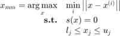
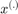
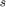

CODES / sampling / mm
Find a "max-min" sample
Contents
Syntax
- x_mm=CODES.sampling.mm(M,lb,ub) finds a "max-min" sample x_mm such that M.eval(x)=0 and lb < x < ub.
- x_mm=CODES.sampling.mm(...,param,value) uses a list of parameters param and values value (c.f., parameter table).
Description
This function finds a "max-min" sample as introduced in Basudhar and Missoum (2010):

where  are the existing samples used to train , a meta-model (an SVM in Basudhar's work). The numerical implementation of this optimization problem follows the steps highlighted in Lacaze and Missoum (2014) regarding the use of the Chebychev distance (infinite norm). This problem being made differentiable, it is then solved using multi-start SQP.
Parameters
| param | value | Description |
|---|---|---|
| 'nb' | positive integer, {1} | Number of "max-min" samples requested ( 'nb' ≥ 2 is refered to as parallel, see Lin et al. (2012)) |
| 'intensity' | positive integer, {30} | Number of starting points for the multi-start SQP algorithm |
| 'UseParallel' | logical, {M.UseParallel} | Should parallel setup be used |
| 'MultiStart' | {'CODES'}, 'MATLAB' | Defines whether MATLAB or CODES multistart fmincon should be used. |
| 'Display' | {'off'}, 'iter', 'final' | Defines the verbose level. |
In addition, options from MultiStart can be used as well, when 'MultiStart' is set to 'MATLAB'.
Example
Compute and plot a "max-min" sample
DOE=CODES.sampling.cvt(20,2,'lb',[-5 -5],'ub',[5 5]); svm=CODES.fit.svm(DOE,DOE(:,1)-DOE(:,2)); x_mm=CODES.sampling.mm(svm,[-5 -5],[5 5]); figure('Position',[200 200 500 500]) svm.isoplot('lb',[-5 -5],'ub',[5 5]) plot(x_mm(1),x_mm(2),'ms')

Mini Tutorial
 |
A mini tutorial of the capabilities of the mm function. |
References
- Basudhar and Missoum (2010): Basudhar A., Missoum S., (2010) An improved adaptive sampling scheme for the construction of explicit boundaries. Structural and Multidisciplinary Optimization 42(4):517-529 - DOI
- Lin et al. (2012): Lin S., Basudhar A., Missoum S., (2012) Parallel construction of explicit boundaries using support vector machines. Engineering Computations 30(1):132-148 - DOI
- Lacaze and Missoum, (2014): Lacaze S., Missoum S., (2014) A generalized "max-min" sample for surrogate update. Structural and Multidisciplinary Optimization 49(4):683-687 - DOI
See also
Copyright © 2015 Computational Optimal Design of Engineering Systems (CODES) Laboratory. University of Arizona.
|
|
Computational Optimal Design of Engineering Systems |

|